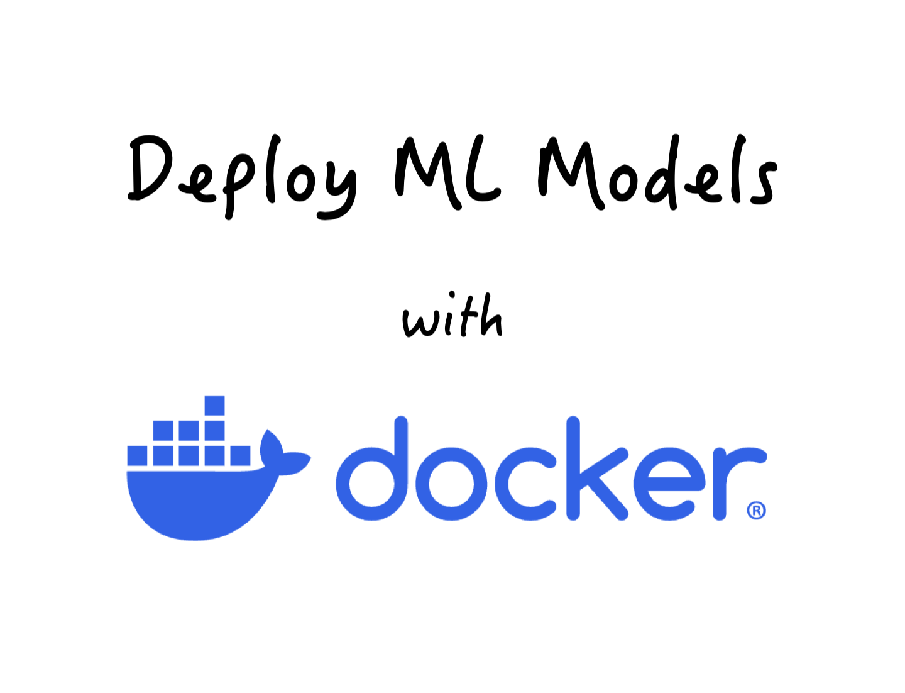
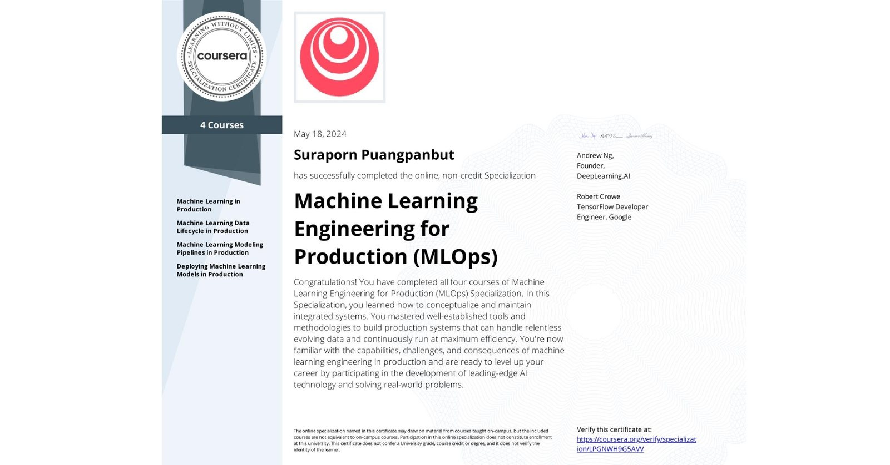
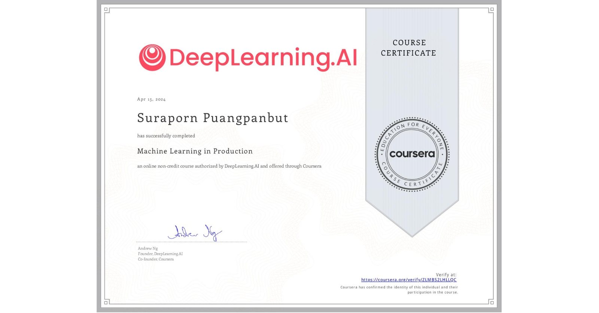
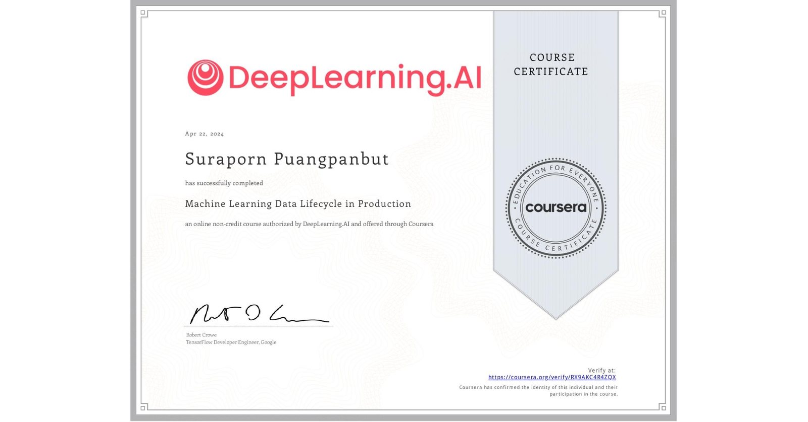
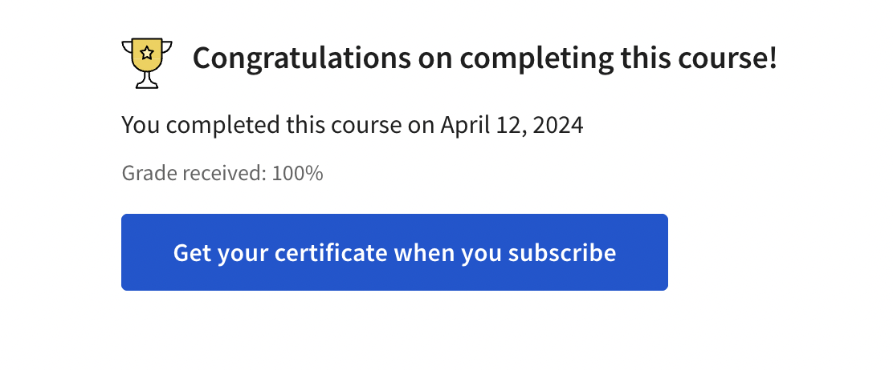
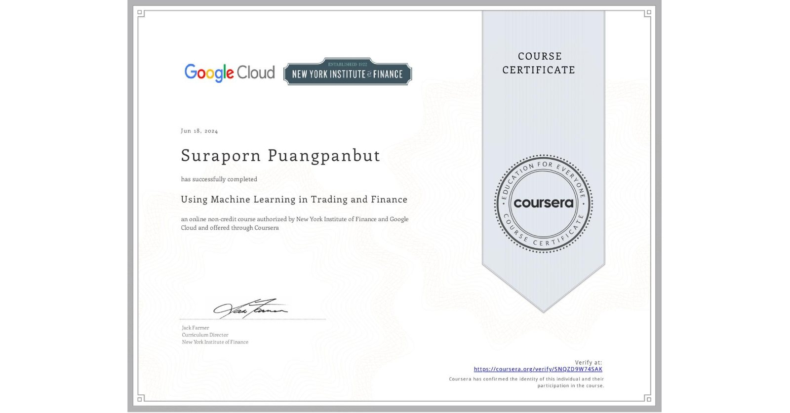

Hi, I'm Nate.
I build forecasting, optimization and ML systems that hold up in production. 10+ years across industrial, supply-chain and data-driven teams, with more than $15.37M in savings and profit delivered.

About
I'm a Vancouver-based data scientist. I currently work as a Data Analyst with Meta (via Tundra Technical Solutions), evaluating and improving ML/LLM-powered analytics. Before that I built forecasting models for non-stationary markets at Eon Labs and spent eight years at SCG Chemicals leading data science teams on demand forecasting, supply-chain optimization and anomaly detection. I hold a Master of Data Science from UBC and an MSc in Electrical Engineering from USC, and I started my career in instrumentation and process control, so I care about models that work in the real world.
Selected projects
Write-ups on deployment, modelling and a few fun experiments.

Operationalizing ML Models with GCP Vertex AI
Taking models from notebook to production on Google Cloud Vertex AI, so the organization actually gets value from them.

Deploy ML Models with Docker
Packaging a scikit-learn sentiment model and its Flask API into a portable container.

Deploy ML Models with Flask
Serving a trained model behind a lightweight Flask REST API.

Deploy ML Models with FastAPI
Building a fast, typed prediction API with FastAPI, because a model only matters once it is deployed.

Tuning Classifiers on Imbalanced Data
Practical techniques for classification problems where one class vastly outnumbers the other.

Rating Prediction of Airbnb Listings
Predicting how popular an Airbnb listing will be from its features.
Certifications
Courses and credentials.






